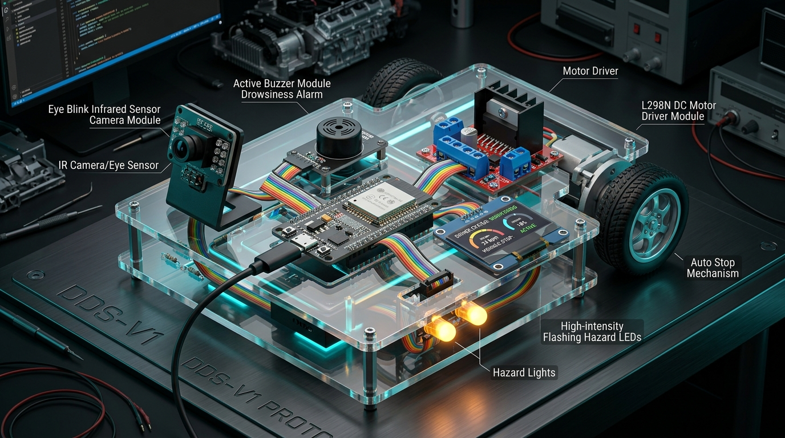

Automotive Edge Safety System
Driver Drowsiness Detection &
Emergency Safe-Stop System
Real-time biometric driver fatigue monitoring and autonomous gradual pull-over safety platform running on ESP32 Dual-Core (ESP-IDF v5.2 FreeRTOS).
The Fatal Reality of Microsleep
Driver fatigue causes 40% of highway crashes worldwide. At 100 km/h, closing eyes for just 4 seconds means the vehicle hurtles blind for over 111 meters with zero driver reaction.
Traditional drowsiness gadgets only sound a buzzer. If the driver is unconscious, in deep microsleep, or experiencing a medical emergency, a sound alert cannot stop the vehicle.
Why Sudden Braking Fails
Slamming 100% emergency brakes in the middle of a high-speed motorway causes catastrophic multi-car pileups from trailing vehicles.
Our Engineered Solution
A smooth 6-second gradual deceleration curve combined with differential steering torque to pull over safely to the road shoulder, backed by instant driver pedal override.

Automotive Prototype Pinout
PERCLOS & Eye Aspect Ratio (EAR)
EAR = (||p2-p6|| + ||p3-p5||) / (2 * ||p1-p4||)
Measures ratio of vertical to horizontal eye opening. Value < 0.22 confirms eye closure.
PERCLOS = (Time_Closed / 60s) * 100%
Validated by FAA & NHTSA as the most reliable physiological metric of driver drowsiness.
• 150 - 300 ms: Natural blink
• 500 - 1200 ms: Heavy fatigue
• > 1500 ms: Microsleep episode
• > 4000 ms: Emergency Safe-Stop
• Eyes Open (EAR > 0.22)
• Motor: 100% Speed
• Alarm: OFF
• Closed: 1.2s - 2.0s
• Soft Chime (1.5 kHz)
• Amber HUD Flash
• Closed: 2.0s - 4.0s
• High Siren (2.7 kHz)
• Haptic Vibration Pulse
• Closed: > 4.0s
• Hazard Flashers ON
• 6s Gradual Decel
• Right Roadside Bias
How Roadside Pull-Over Works
Amber high-intensity LEDs flash before deceleration begins to alert trailing expressway drivers up to 200m away.
PWM throttles down from 100% to 70%, 50%, 25%, and 0% across 6 seconds. Eliminates sudden skidding and rear-end crashes.
Differential torque bias applied to the drive wheels gently nudges the vehicle toward the highway shoulder to clear the active travel lane.
Live Web Serial Dashboard
Connects directly to the ESP32 via Chrome/Edge USB Web Serial without installing any drivers or external software.
Ready for College Viva & Defense
Complete source code, FreeRTOS modular tasks, unit tests, and documentation are committed and pushed to GitHub: